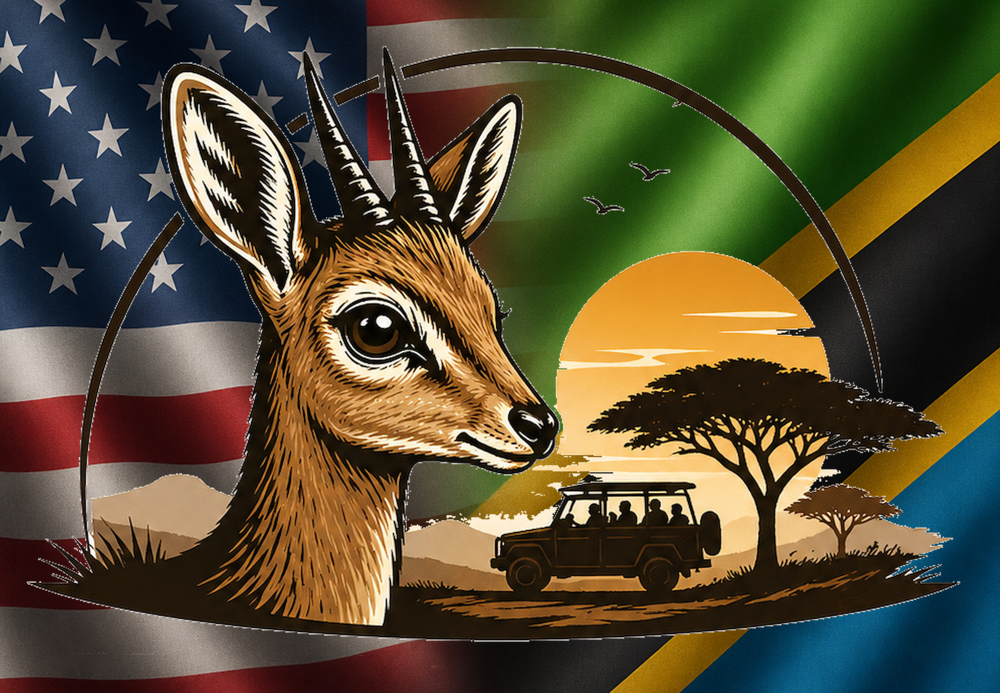

Where intention meets wilderness
Turning Skies Safaris was born from our family’s love for Tanzania—its national parks, its wildlife, and the natural beauty that makes this country unlike anywhere else.
We come from two different cultures, yet it was the wild places of Tanzania that brought us together. Out in the open landscapes where animals live free, life feels honest and unfiltered. That is the Tanzania we want to share.
We don’t try to change or modernize the experience. The rough roads—what we lovingly call the “African massage”—are part of the adventure. The dust, the long drives, the quiet moments watching wildlife… that is the real Tanzania. This country is growing and modernizing, yes, but in its own rhythm, without losing what makes it special.
For our family, the national parks became the place where our stories blended. It’s where we learned each other’s worlds and built something new together. Through Turning Skies Safaris, we invite you to experience that same connection—to the wildlife, to the land, and to the peaceful, powerful beauty of Tanzania as it truly is.

We chose the dik-dik as our mascot because it represents the spirit of Tanzania in a quiet, humble way. It’s a small antelope, gentle and alert, moving through the national parks with confidence and curiosity. You’ll often see it standing still, watching the world with those bright eyes, or darting through the grass as the light changes across the landscape. For us, the dik-dik reflects the heart behind Turning Skies Safaris. It lives in harmony with the land, always aware, always connected to its surroundings. That is the same feeling we want our guests to experience a sense of belonging in the wild places of Tanzania, where every moment feels honest and real. We built this company to open the door for others to experience our country the way we do: with respect, curiosity, and a deep appreciation for the wildlife and national parks that make Tanzania so special. The dik-dik reminds us of that purpose every day small but full of character, simple but unforgettable, just like the moments we hope to create for every traveler.
Every journey meticulously prepared.
Transparency and respect in all we do.
Excellence in every detail of our safaris.
“We provide more than a drive; we provide a bridge to the wild—guided with transparency, integrity, and a commitment to the people and places that make Tanzania extraordinary.”